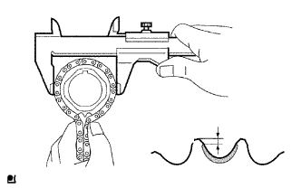
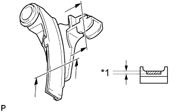
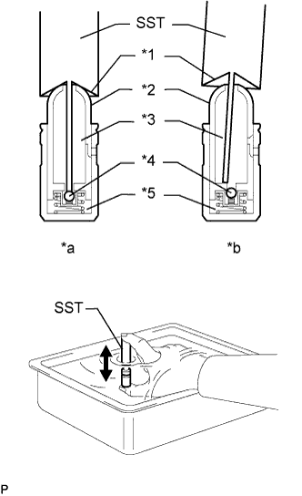

БЛОК ДВИГАТЕЛЯ > ПРОВЕРКА |
| 1. ПРОВЕРЬТЕ ЦЕПЬ В СБОРЕ |
Потяните за цепь с усилием 147 Н (15 кгс, 33,0 фунт-силы), как показано на рисунке.
С помощью штангенциркуля измерьте длину 16 звеньев.
| *1 | Диапазон измерений |
| 2. ПРОВЕРЬТЕ ЦЕПЬ № 2 В СБОРЕ |
Натяните цепь с усилием 147 Н (15 кгс, 33,0 фунт-силы).
С помощью штангенциркуля измерьте длину 16 звеньев.
| 3. ПРОВЕРЬТЕ НАТЯЖИТЕЛЬ ЦЕПИ № 1 В СБОРЕ |
Отведите стопорную пластину вверх, чтобы освободить фиксатор. Нажмите на плунжер и проверьте, чтобы он перемещался плавно.
| *1 | Плунжер |
| *2 | Стопорная пластина |
| 4. ПРОВЕРЬТЕ НАТЯЖИТЕЛЬ ЦЕПИ № 2 В СБОРЕ |
Отведите стопорную пластину вниз, чтобы освободить фиксатор. Нажмите на плунжер и убедитесь, что он перемещается плавно.
| *1 | Плунжер |
| *2 | Стопорная пластина |
| 5. ПРОВЕРЬТЕ ЗВЕЗДОЧКУ РАСПРЕДВАЛА |
Измерьте расстояние между самым изношенным зубцом звездочки и началом зоны износа ниже зубца.
 | Зона износа |
Оберните цепь вокруг звездочки.
Штангенциркулем измерьте диаметр звездочки с цепью.
| 6. ПРОВЕРЬТЕ ЗУБЧАТОЕ КОЛЕСО РАСПРЕДВАЛА В СБОРЕ |
Измерьте расстояние между самым изношенным зубцом зубчатого колеса и началом зоны износа ниже зубца.
| Зона износа |
Оберните цепь вокруг зубчатого колеса.
Штангенциркулем измерьте диаметр звездочки с цепью.
| 7. ПРОВЕРЬТЕ ВЕДУЩЕЕ ЗУБЧАТОЕ КОЛЕСО КОЛЕНЧАТОГО ВАЛА |
|  |
Измерьте расстояние между самым изношенным зубцом звездочки и началом зоны износа ниже зубца.
| Зона износа |
Оберните цепь вокруг ведущей звездочки.
Штангенциркулем измерьте диаметр звездочки с цепью.
| 8. ПРОВЕРЬТЕ БАШМАК НАТЯЖИТЕЛЯ ЦЕПИ |
 |
Измерьте износ башмака натяжителя цепи штангенциркулем.
| *1 | Износ |
| 9. ПРОВЕРЬТЕ УСПОКОИТЕЛЬ ЦЕПИ № 1 |
Измерьте износ успокоителя цепи штангенциркулем.
| *1 | Износ |
| 10. ПРОВЕРЬТЕ НАПРАВЛЯЮЩУЮ ЦЕПНОГО ПРИВОДА ГАЗОРАСПРЕДЕЛИТЕЛЬНОГО МЕХАНИЗМА |
Измерьте износ направляющей цепного привода штангенциркулем.
| Износ |
| 11. ПРОВЕРЬТЕ ВЕДУЩУЮ ЗВЕЗДОЧКУ № 2 ЦЕПИ ГРМ НА КОЛЕНЧАТОМ ВАЛУ |
Оберните цепь вокруг звездочки.
Штангенциркулем измерьте диаметр звездочки с цепью.
| 12. ПРОВЕРЬТЕ ПРИВОДНУЮ ШЕСТЕРНЮ УРАВНОВЕШИВАЮЩЕГО ВАЛА В СБОРЕ |
Оберните цепь вокруг звездочки.
Штангенциркулем измерьте диаметр звездочки с цепью.
| 13. ПРОВЕРЬТЕ УСПОКОИТЕЛЬ ЦЕПИ № 2 |
|  |
Измерьте износ успокоителя цепи штангенциркулем.
| *1 | Износ |
| 14. ПРОВЕРЬТЕ УСПОКОИТЕЛЬ ЦЕПИ № 3 |
Измерьте износ успокоителя цепи штангенциркулем.
| *1 | Износ |
| 15. ПРОВЕРЬТЕ УСПОКОИТЕЛЬ ЦЕПИ № 4 |
Измерьте износ успокоителя цепи штангенциркулем.
| *1 | Износ |
| 16. ПРОВЕРЬТЕ УСТАНОВОЧНЫЙ БОЛТ ГОЛОВКИ БЛОКА ЦИЛИНДРОВ |
 |
С помощью штангенциркуля измерьте диаметр самого удлиненного резьбового элемента в зоне измерения.
| *1 | Диапазон измерений |
| *2 | Расстояние |
| 17. ПРОВЕРЬТЕ МЕХАНИЗМ РЕГУЛИРОВКИ ЗАЗОРА В ПРИВОДЕ КЛАПАНА В СБОРЕ |
|  |
Поместите механизм регулировки зазора в емкость, наполненную свежим моторным маслом.
| *1 | Конусная часть |
| *2 | Плунжер |
| *3 | Камера низкого давления |
| *4 | Запорный шарик |
| *5 | Камера высокого давления |
| *a | ПРАВИЛЬНО |
| *b | НЕПРАВИЛЬНО |
Вставьте наконечник SST в плунжер механизма регулировки зазора и отожмите вниз запорный шарик внутри плунжера.
Прижмите SST к механизму регулировки зазора так, чтобы переместить плунжер вверх-вниз 5-6 раз.
Проверьте ход плунжера и выпустите воздух.
После выпуска воздуха извлеките SST. Затем попробуйте быстро и с усилием нажать на плунжер пальцем.
| 18. ПРОВЕРЬТЕ РАСПРЕДВАЛ |
Проверьте биение распредвала.
Установите распредвал на V-образные призмы.
Индикатором часового типа измерьте радиальное биение на центральной шейке.
С помощью микрометра измерьте высоту выступа кулачка.
Микрометром измерьте диаметр шейки.
| Параметр / Устройство | Заданные условия |
| Для шейки №1 | 35,949 - 35,965 мм (1,415 - 1,416 дюйма) |
| Для остальных шеек | 26,959 - 26,975 мм (1,061 - 1,062 дюйма) |
| 19. ПРОВЕРЬТЕ РАСПРЕДВАЛ № 2 |
Проверьте биение распредвала.
Установите распредвал на V-образные призмы.
Индикатором часового типа измерьте радиальное биение на центральной шейке.
С помощью микрометра измерьте высоту выступа кулачка.
Микрометром измерьте диаметр шейки.
| Параметр / Устройство | Заданные условия |
| Для шейки №1 | 35,949 - 35,965 мм (1,415 - 1,416 дюйма) |
| Для остальных шеек | 26,959 - 26,975 мм (1,061 - 1,062 дюйма) |
| 20. ПРОВЕРЬТЕ ОСЕВОЙ ЗАЗОР РАСПРЕДВАЛА |
 |
Установите распредвалы (Нажмите здесь).
Смещая распредвал вперед и назад, индикатором часового типа измерьте осевой зазор.
| 21. ПРОВЕРЬТЕ МАСЛЯНЫЙ ЗАЗОР РАСПРЕДВАЛА |
Очистите крышки подшипника и шейки распредвала.
Установите распредвалы в головку блока цилиндров.
 |
Поместите проволочки для измерения зазоров в осевом направлении на все шейки распределительного вала.
| *1 | Сминаемый пластичный калибр Plastigage |
Установите крышки подшипников (Нажмите здесь).
Снимите крышки подшипников (Нажмите здесь).
Измерьте ширину сминаемого пластичного калибра Plastigage в самой широкой точке.
| Параметр / Устройство | Заданные условия |
| Для шейки №1 | 0,035 - 0,072 мм (0,00138 - 0,00283 дюйма) |
| Для остальных шеек | 0,025 - 0,062 мм (0,000984 - 0,00244 дюйма) |
| *1 | Сминаемый пластичный калибр Plastigage |
Полностью удалите сминаемый пластичный калибр (Plastigage).
| 22. ПРОВЕРЬТЕ ВЫПУСКНОЙ КОЛЛЕКТОР |
С помощью прецизионной поверочной линейки и комплекта плоских щупов измерьте коробление поверхности, соприкасающейся с головкой блока цилиндров.